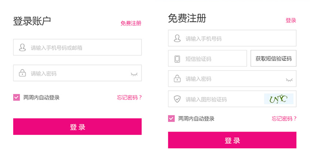
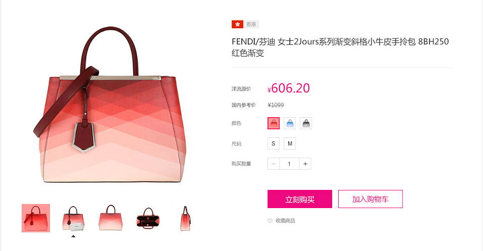
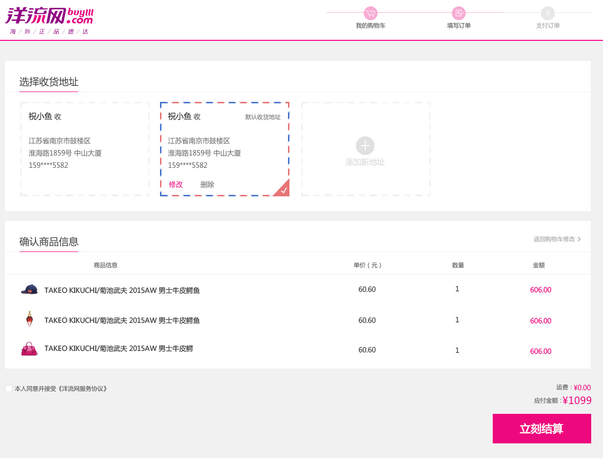
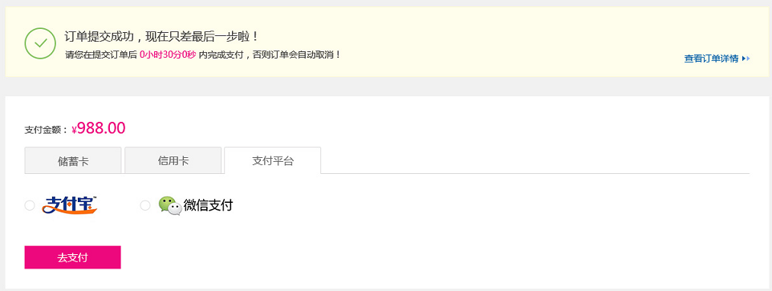

首页 > 帮助中心
购物流程
登录/注册 -->选购商品-->加入购物车-->提交订单-->支付付款-->收货与评价
1.进入洋流网首页，点击右上角的“注册”或“登录”， 即可进入到账户注册或登录环节。
2.进入到账户注册或登录页面后，按照页面提示，填写账户信息，完成登注册或登录。
方法一：洋流网经常举办促销、专场、抽奖等超值回馈活动，想要以最低的价格买到最优质的商品，就天天都来洋流网关注首页更新吧！
方法二：您也可以点击顶部导航栏的 家居日用，个人护理，母婴用品，时尚美妆，美食饮品，户外箱包，挑选和购买您心仪的产品。您也可以通过网站的“搜索”功能，找到您中意的产品。
温馨提示：所有特卖活动都是限时限量的，随时可能被抢光或结束，看到喜欢的商品，就不要犹豫赶快出手吧！购买非常简单，只要点击购买按钮，按照提示步骤进行就OK！
浏览要购买的商品，点击“加入购物车”商品会自动添加到购物车里。
请填写正确完整的收货人姓名、收货人联系方式、详细的收货地址和邮编，否则将会影响您订单的处理或配送。
商品信息核实无误后，请点击"立刻结算"，系统生成一个订单号，就说明您已经成功提交订单。
洋流网全程支持人民币支付，并提供三种支付方式：储蓄卡支付、信用卡支付及平台支付，您可以根据需要选择不同的支付方式进行支付。
请在快递人员送货时仔细检查快递包装，拆箱验货之后再签收，包裹如有破损、渗漏等问题，请您暂不签收，并马上联系我们的客服人员。如您的包裹由他人代收，遇任何问题在签收后也可申请退货，详情请咨询客服人员（免长途费）：400-025-1333
请您签收货品时，尽量在快递人员在场时当面检查商品（如果快递人员坚持先签收再验货，可以在签收之后立刻检查）。请注意：
1. 务必检查封箱胶带是否为洋流网专用胶带，胶带是否有被拆开重新粘贴过的痕迹。
2. 务必检查包装箱是否为宝贝格子专用包装箱，包装箱上是否有洋流网客户留档信息。
3. 快递包装是否有破损、渗漏、缺少等现象。
4. 若出现以上情况，建议您尽快与我们取得联系，并拍照存档，把照片发给我们的客服人员，以便我们对物流快递公司进行追责。
最后，您可以“确认收货”后，对收到的商品进行评价或进行晒单。